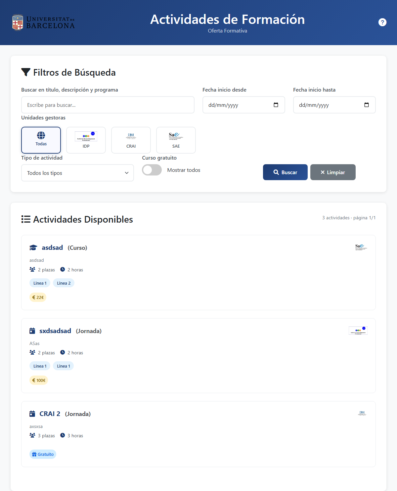

Cómo Buscar Actividades
Guía completa para encontrar la actividad formativa perfecta para ti
Guía completa para encontrar la actividad formativa perfecta para ti
La página de búsqueda te permite explorar todas las actividades formativas disponibles en la Universidad de Barcelona.
En el campo de búsqueda principal, puedes escribir:

Los resultados se actualizarán automáticamente mostrando solo las actividades que coincidan con tu búsqueda.
Filtra por la unidad que organiza las actividades:

Selecciona el tipo que más te interese:

Filtra actividades por su fecha de inicio:
Activa este filtro para ver únicamente las actividades sin coste:
Cada actividad muestra un icono que representa su tipo (🎓 Curso, 👥 Seminario, etc.) seguido del nombre del tipo entre paréntesis.
En la esquina superior derecha verás el logo de la unidad gestora que organiza la actividad.
Al final de cada tarjeta se muestra si es gratuita (🎁) o su precio en euros (💰 22€).